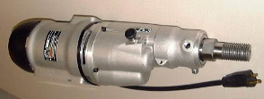

Keystone Machine, Inc.
Your parts.
Our precision.
Manufacturing of portable power tools and precision machined parts. Close tolerance components for a range of industries.
Complex components.
Manufactured to your print.
Keystone and its staff specialize in computer assisted manufacturing of quality machined parts.
We have invested in the latest computer and machining technologies to provide competitively produced parts.
We are a machine shop for high precision parts, specializing in CNC machining of close tolerance components. If you need complex or difficult components manufactured to exacting tolerances, it is what we do best.
Whether you have 10 piece or 100,000 piece runs, we have the equipment and personnel to do the job.
Product detail / Portable power tools
Electric motor with
water cooled spindle.
Manufacturing of portable power tools and precision machined parts.

Made in USA
Your next component starts here
Put your blueprint to work.
Send your drawings to sales@keystonemachine.com.